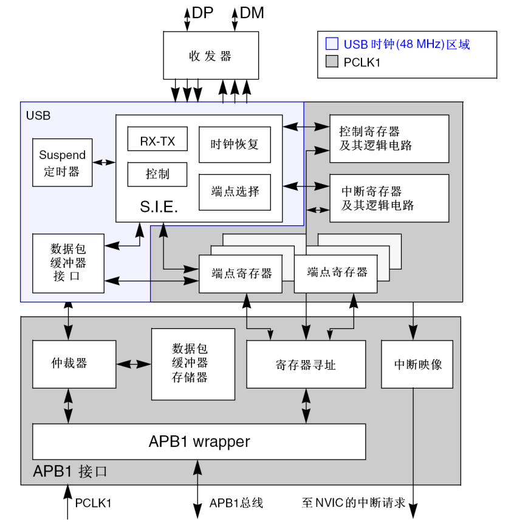
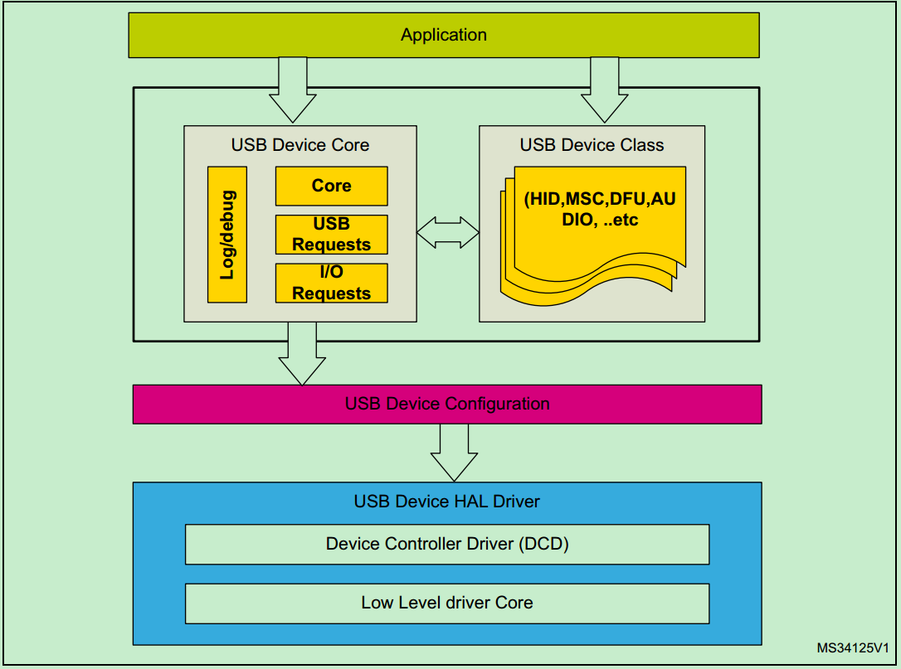
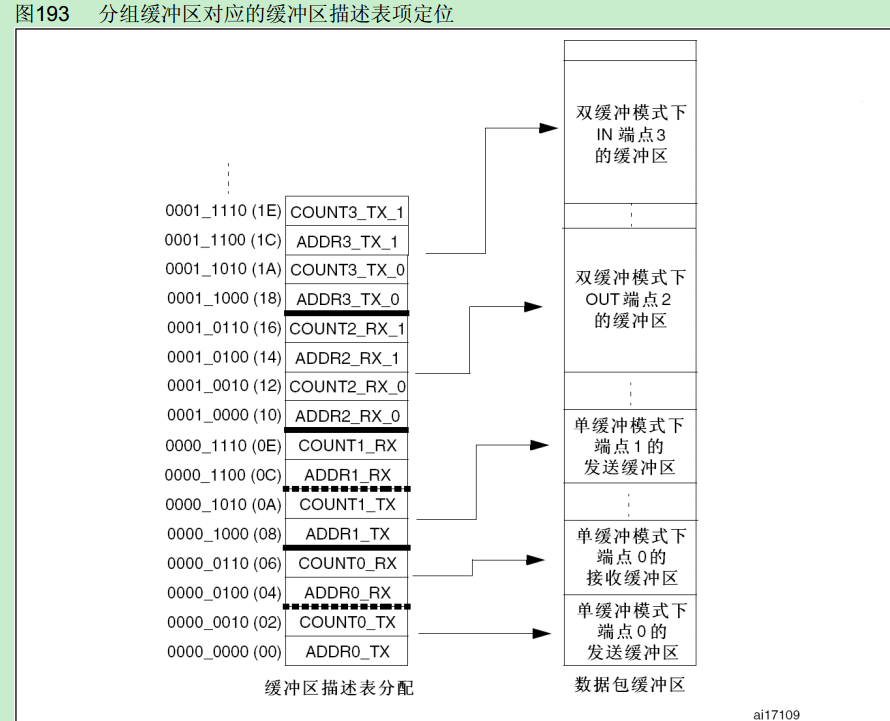

stm32 usb FS device notes
更新日期:
功能框图

手册要点
- 可配置双向端点数量最大为8个，每个端点最大可使用512字节缓冲区
- 和CAN总线共用一块分组缓冲区(0x40006000 - 0x400063FF)，所以两者不能同时使用
- 主机数据传输过来，先到达内部16bit寄存器，然后交换到内存缓冲区。数据传输结束，触发中断。
- 接收到主机的reset信号，端点0被使能，进入枚举阶段。复位中断产生时，应用程序必须在10ms之内使能端点0的传输
- 缓冲区在APB1总线一半周期内用于微控制器访问（32bit），一半周期内用于USB接口（16bit）访问(如同双口RAM)，每个USB模块中的地址*2才能对应到控制器中的地址
- 端点初始化的第一步是把合适的值写入到ADDRn_Tx或者ADDRn_RX寄存器中，以便USB模块能找到缓冲区
- 每一种传输方式有不同的处理方法
- 挂起状态处理。通常情况下主机每毫秒发送一个SOF信号。如果STM32 USB模块检测到连续3个SOF信号丢失，就会进入到挂起状态，总线耗电流降到500uA
USB模块寄存器有三类：
- 通用类寄存器
- 端点寄存器
缓冲区描述表类寄存器。基地址由USB_BTABLE寄存器指定
所以USB寄存器可看成由固定地址寄存器和分组缓冲区中一部分组成。
核心库解读

所有的通信都是在中断中完成 这一点很重要。void HAL_PCD_IRQHandler(PCD_HandleTypeDef *hpcd)- Device initialization :HAL_PCB_Init(PCB_HandleTypeDef *hpcd) 此函数在usbd_config.c文件中被USBD_LL_Init函数调用
- Endpoint configuration : HAL_PCD_EP_Open 。此函数在usbd_config.c文件中被USBD_LL_OpenEP封装，并被各个USB Device Class及core调用
- USBD_HandleTypeDef 这个结构体包含了USB Device所有的数据结构，以及端点信息，状态信息，控制传输状态机等。
- HAL层数据传输函数 HAL_PCD_EP_Transimit HAL_PCD_EP_Recieve …
- 分组缓冲区首地址由BTABLE_ADDRESS决定，cube中这个值都是0，意味着table位于分组缓冲区的首地址，也意味着端点0的描述表首地址也在这。
- 端点配置函数 HAL_PCDEx_PMAConfig。可以设置IN/OUT端点号，单缓冲还是双缓冲，IN/OUT数据缓冲区。
- 假设cube中如此定义123
意味着 缓冲区描述表占24byte。单缓冲情况下每个端点的描述表需占用4个byte，所以这个描述表描述了3个双向单缓冲端点(详细可以参考《STM32中文参考手册 21.4.2》)。EP0的发送和接收缓冲区大小都为64byte

cube程序流程
整个流程在 MX_USB_DEVICE_Init中完成
- HAL_PCD_Init
- 分配端点，端点描述表，缓冲区
- 注册类
- start usb
若是要使用复合类，则需要分配端点和修改类描述
接收数据流程
- USB中断，比如USB_L0_CAN1_RX0_IRQHandler
- HAL_PCD_IRQHandler函数
- CTR中断处理函数 PCD_EP_ISR_Handler。这个函数的流程很重要
- 读中断状态寄存器ISTR
- 从ISTR中获取端点号索引
- 从索引获取端点号寄存器。通过PCD_GET_ENDPOINT宏计算出当前端点号的寄存器地址。计算方法为计算相对EP0的偏移值，从手册上可以看出，偏移值刚好是索引值得两倍
- 单缓冲情况下，通过宏PCD_GET_EP_RX_CNT得到缓冲区描述表中存储的10bit的接收数据字节数
- USB_ReadPMA函数，从缓冲区中拷贝数据到用户缓冲区。需要注意，供应用程序使用的分组缓冲区地址需要乘以2才是分组缓冲区在总线上的地址。
- PCD_FreeUserBuffer 。这个函数名字很奇怪，实际是清相应端点的CTR位和翻转DTOG位
ep->xfer_count+ = count; ep->xfer_buff+=count; 这一句是实现长数据包处理的关键。后面会详细介绍。
- HAL_PCD_DataOutStateCallBack
- USBD_LL_DataOutStage
- 对应class的DataOut函数，比如CDC类，则会调用 USBD_CDC_DataOut
- 对应interface的recieve函数。比如cube自动生成的usbd_cdc_if.c中的CDC_Receive_FS函数。这个函数也是开放给用户修改用的。后面这两个函数的调用都是用函数指针完成的，比较隐蔽。
长数据的接收
上面有提到，数据最开始是存到分组缓冲区的，然后在CTR中断中，通过USB_ReadPMA函数拷贝到用户缓冲区(xfer_buff指向的就是用户缓冲区)。cube生成的代码中，分组缓冲区默认只有64个byte，最大也只能分配512个byte。若是host一次性发送的数据量超过这数值，就需要在每次接收完成后，将用户存储区移位。这一机制就是通过上面红字实现的。中断处理函数中，会对对应端口接收到的数据量进行累加。其中xfer_buff就是缓冲区的地址。使用CDC接口调试可以发现，接收到数据，经过红字后，缓冲区地址自动增加。但是回调到下面的函数
xfer_buff又被指向了用户缓冲区的起始位置。分析一下。
- 首先，需要注意的是hUsbDeviceFS这个全局变量
|
|
- USBD_CDC_SetRxBuffer(&hUsbDeviceFS, Buf)这个函数如下
|
|
需要理解hcdc->RxBuffer = pbuff 赋值语句到底将什么赋值给了什么。
- 函数将USBD_HandleTypeDef的void指针pClassData强制转换为USBD_CDC_HandleTypeDef。那么这个指针实际上指向的是哪里？
可以看到在USBD_CDC_Init函数中有一句：pdev->pClassData = USBD_malloc(sizeof(USBD_CDC_HandleTypeDef))；这个malloc原型为static uint32_t mem[sizeof(USBD_CDC_HandleTypeDef)/4)+1];
所以在CDC初始化的时候，绕了一个大弯生成了一个USBD_CDC_HandleTypeDef的静态变量，并且这个变量的首地址被保存到hUsbDeviceFS.pClassData中。这个赋值语句等价于 mem.RxBuffer = pbuff（mem.RxBuffer在初始化的时候指向了用户缓冲区首地址)。 - pbuff又是什么？根据函数调用关系 USBD_CDC_DataOut函数传递值给了Buf,Buf=pbuff。传递的值为hcdc->RxBuff。所以在这里被调用的USBD_CDC_SetRxBuffer(&hUsbDeviceFS, Buf)函数等价于
mem.RxBuffer = mem.RxBuffer
- 再看USBD_CDC_ReceivePacket这个函数，最终调用了HAL_PCD_EP_Receive函数，并在中间有一句ep->xfer_buff = pBuf，而pBuf = mem.RxBuffer = 用户缓冲区。
- 以上可以看出，若是不对USBD_CDC_SetRxBuffer函数的参数做任何更改，经过USBD_CDC_ReceivePacket这个函数后，USB_ReadPMA的缓冲区又被设置成了用户缓冲区的首地址。
- cube 在这里比较奇怪的一点就是，中断中明明有ep->xfer_buff+=count;这一句用来处理长数据包，但是在回调中又调用ep->xfer_buff = pBuf将buff归到首地址。猜测不是他们的本意。
- anyway，我们只需要修改USBD_CDC_SetRxBuffer(&hUsbDeviceFS, Buf);为USBD_CDC_SetRxBuffer(&hUsbDeviceFS, Buf+*Len);就可以完成长数据包的接收了。因为这一句等价于mem.RxBuffer += *Len，静态变量不停的累加。当长度要溢出时，将hUsbDeviceFS.pClassData->RxBuffer = UserBuf ； hpcd_USB_FS.Out_ep[CDC_OUT_EP & 0x7F] = UserBuf就完成循环双缓冲了。